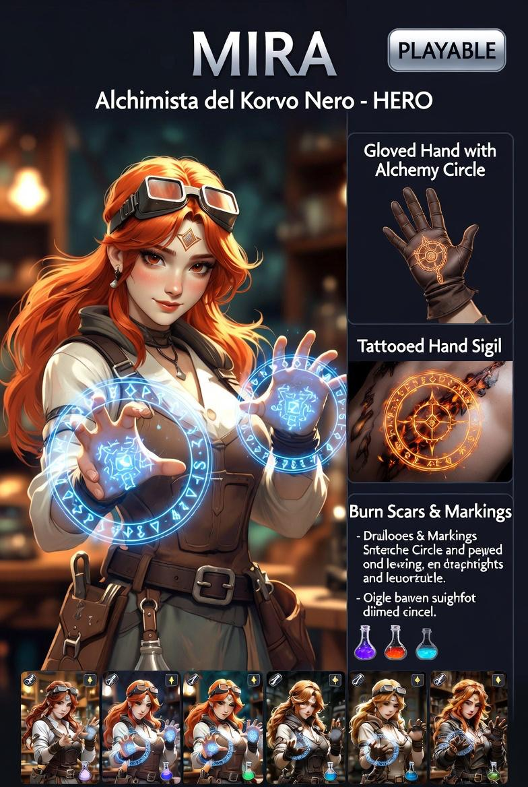

Alchimista di Korvo Nero
Giocare Mira è giocare con ciò che il piano ti dà.
Ogni stanza è un laboratorio. Ogni errore ha un prezzo fisico.
| Causa | Effetto |
|---|---|
| Trasmutazione oltre i limiti dello scambio equivalente | Sanguinamento temporaneo |
| Guanti rotti + trasmutazione fallita | Perdita temporanea di un senso (visione ridotta) o svenimento breve |
| Calore tatuaggi al massimo | Penalità visiva + trasmutazioni più lente / meno precise |
L'alchimia non è magia. Non si può creare dal nulla. Per ottenere qualcosa occorre materiale di valore equivalente. Ogni trasmutazione ha un ingresso (materiale disponibile) e un'uscita (forma trasformata). Se l'ingresso è insufficiente: Rebound.
Attivazione: batte le mani per avviare la reazione (nessun cerchio necessario — guanti e tatuaggi sostituiscono il cerchio tradizionale).
| Abilità | Input | Effetto | Requisito |
|---|---|---|---|
| Difesa | LMB su superficie | Muro istantaneo o cupola di protezione (blocca proiettili) | Materiale solido sotto i piedi |
| Attacco terreno | RMB su nemico | Sabbie mobili (rallenta, no danno) o lance di pietra/metallo (danno diretto) | Pavimento non spoglio |
| Riarmo al volo | Q su oggetto metallico | Rimodella in lancia (danno distanza) o scudo (blocco fisico) | Oggetto metallico in raggio 40px |
| Reazione Metamorfica | F su superficie | Cambia consistenza: solido → gelatinoso, pietra → fragile, aria compressa → parete | Contatto fisico con la superficie |
| Pozione Potenziata | E su fiala | Acqua → ghiaccio esplosivo · Olio → fiamma accelerata · Acido → vapore corrosivo | Fiala alla cintura disponibile |
| Limite | Effetto gameplay |
|---|---|
| Nessun materiale disponibile | Solo attacco fisico base — potenza quasi nulla |
| Mani bloccate o legate | Nessuna trasmutazione possibile |
| Temperatura tatuaggi al massimo | Trasmutazioni più lente e meno precise — rischio Rebound aumentato |
| Guanti distrutti | Ogni trasmutazione fallita causa Rebound fisico diretto |
| Tile | Effetto su Mira |
|---|---|
| METAL | Materiale metallico disponibile → Riarmo al volo garantito |
| Deposito materiali | Trasmutazioni con rischio Rebound ridotto — risorse multiple |
| FLOOR spoglio | Solo attacchi base — Sintesi Somatica limitatissima |
| DESTRUCTIBLE | Reazione Metamorfica può indebolirlo o aprire nuovi passaggi |
| Campo | Valore |
|---|---|
| File da creare | src/characters/Mira.js |
| Estende | BaseCharacter |
| Richiede | Sistema materiali per stanza, interazione tile METAL / depositi |
| Spec narrativa | docs/superpowers/specs/2026-05-18-fractured-inheritance-design.md |
| Stato | design approvato — da implementare dopo Silas |